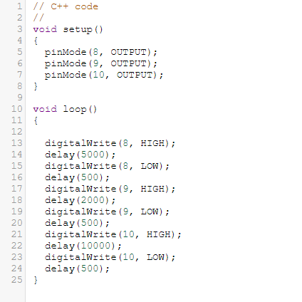

Objetivo
Criar Semáforo Inteligente com Arduino
Materiais Utilizados
Arduino Uno R3 (Placa microcontroladora)
Protoboard (Realizar as conexões sem necessidade de solda)
LEDs (3 unidades: verde, amarelo e vermelho)
Resistores (Proteção para evitar que os LEDs queimassem)
Diagrama do Circuito
O circuito foi montado conectando os três LEDs em pinos digitais do Arduino.
Cada LED foi associado a um resistor para limitar a corrente e evitar danos aos LEDs.
A outra perna de cada LED foi conectada ao GND na protoboard.
Código Fonte & Procedimento
Código em C++ utilizando a IDE do Arduino.
Configuramos os pinos digitais como saídas no void setup(), usando o comando pinMode().
Implementamos a lógica para acender e apagar os LEDs de forma sequencial no void loop(),
utilizando digitalWrite() para definir o estado de cada pino (HIGH para acender e LOW
para apagar). Além disso, utilizamos o comando delay() para controlar o tempo entre as
mudanças de estado dos LEDs.
Resultados & Conclusão
Ao executar o código, os três LEDs acenderam conforme o esperado, de acordo com a programação.
O projeto foi bem-sucedido, reforçando conceitos de eletrônica básica e programação. Esse
exercício nos preparou para desafios mais complexos, envolvendo sensores, potenciômetros e
outros componentes.